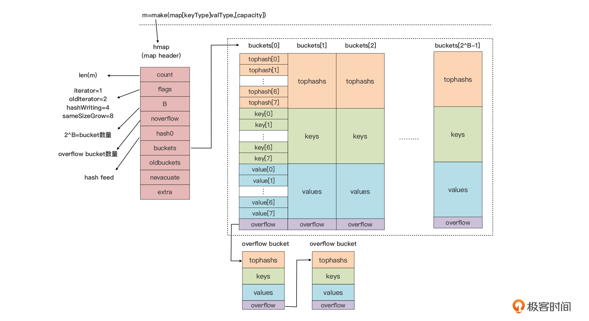

Map 内部实现 #

map的内部结构 #
- hmap
- bucket
- topHash 快速定位key,以空间换时间 每个 bucket 的 tophash 区域其实是用来快速定位 key 位置的. 这是一种以空间换时间的思路。
- key
- value Go 运行时采用了把 key 和 value 分开存储的方式，而不是采用一个 kv 接着一个 kv 的 kv 紧邻方式存储，这带来的其实是算法上的复杂性，但却减少了因内存对齐带来的内存浪费。
- overflow
- bucket
- bmap
map的内部函数 [4] #
- mapassign 写
- mapdelete 删
- mapaccess 读
扩容 [2] #
- buckets && oldbuckets
- 两种扩容方式 [渐进式扩容, 类似redis rehash]
- 因为 overflow bucket 过多导致的“扩容”，实际上运行时会新建一个和现有规模一样的 bucket 数组，然后在 assign 和 delete 时做排空和迁移。
- 因为当前数据数量超出 LoadFactor 指定水位而进行的扩容，那么运行时会建立一个两倍于现有规模的 bucket 数组，但真正的排空和迁移工作也是在 assign 和 delete 时逐步进行的。
扩容 [4] #
触发: mapassign 时机: load factor 过大 OR overflow bucket 过多 搬运过程: 渐进式
- mapassign
- elem cout > bucket*6.5 -> bigger size grow
- overflow too many –> same size grow
- noverflow >=2^15
- nvoerflow < 2^15 && nvoerflow > bucket count
map 解决 hash 冲突 [3] #
在 map 解决 hash /分桶 冲突问题时，实际上结合了拉链法和开放寻址法两种思路. 以 map 的插入写流程为例，进行思路阐述： （1）桶数组中的每个桶，严格意义上是一个单向桶链表，以桶为节点进行串联； （2）每个桶固定可以存放 8 个 key-value 对； （3）当 key 命中一个桶时，首先根据开放寻址法，在桶的 8 个位置中寻找空位进行插入； （4）倘若桶的 8 个位置都已被占满，则基于桶的溢出桶指针，找到下一个桶，重复第（3）步； （5）倘若遍历到链表尾部，仍未找到空位，则基于拉链法，在桶链表尾部续接新桶，并插入 key-value 对.
缺陷 [4] #
- 已经扩容的map, 无法 缩容
- 保证并发安全时, 要手动读写锁，易出错
- 多核心下表现差
map的使用 #
map的使用 #
value没有任何的限制, key有严格的限制
并发 #
- 不可以并发读写 可以并发读
参考 #
- Go面试题系列：Go map的底层实现原理
- 《16|复合数据类型：原始map类型的实现机制是这样的？》 TonyBai
- Golang map 实现原理
- 《09 神奇的内置数据结构》 V